통신 구조
바이탈 수신과 XR 표시
영상 위에 필요한 수치를 배치하고 파형을 별도 패널로 보기 위해, 모니터 화면을 복제하는 방식과 별도로 숫자·파형 데이터를 받는 경로를 만들었습니다.
- 01 · 데이터 출력Philips 모니터RS232 · USB 어댑터
- 02 · 수신·해석Mac 수신 프로그램값·단위·파형 샘플
- 03 · 표시Galaxy XR수치 오버레이·파형 패널
Mac 수신 프로그램은 모니터와 통신하고, 받은 값과 단위·파형 샘플을 해석해 전달합니다. XR 앱은 숫자를 갱신하고, 샘플 시각에 맞춰 파형을 재생합니다. 연결이 끊기거나 데이터가 오래되면 화면에서 상태를 구분합니다.
처음에는 숫자 수신부터 시작해 파형 처리와 영상 위 오버레이를 추가했습니다. 별도 수신 프로그램으로 확인한 기능을 이후 Mac 앱에 통합했습니다.
2026.08.10 · 제작 기록
MX850의 바이탈 데이터를 XR로 전달
7월 14일, 수술실의 Philips IntelliVue MX850에서 HR·SpO₂·혈압 등의 숫자를 1초 주기로 받아 Galaxy XR에 표시하는 작업을 시작했습니다. 영상과 별도로 바이탈을 전달하는 통신 경로를 만들고, 생성 신호로 화면을 먼저 확인했습니다.
MX850 후면의 노란 라벨 MIB/RS232 포트를 확인하고, 이 포트에서 데이터를 받아 MacBook으로 읽기 위한 케이블을 제작했습니다.
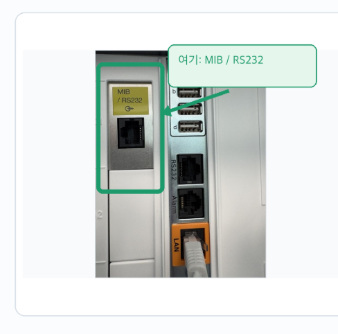
포트의 커넥터는 RJ45 형태이며, 통신 방식은 RS232입니다. MacBook의 USB에 연결하기 위해 CAT.5E 케이블 한쪽을 DB9F 단자로 바꾸고 USB–RS232 어댑터를 연결했습니다.
- MX850 MIB/RS232
- RJ45–DB9F 제작 케이블
- ATEN UC232AF 어댑터
- MacBook USB
배선과 조립
CAT.5E 케이블의 RJ45 플러그 한쪽을 남기고 반대쪽을 잘라 피복을 벗겼습니다. 여덟 가닥 중 송신·수신·접지에 필요한 세 가닥을 골라 DB9F 나사 단자에 연결했습니다.
| RJ45 핀 | 도선 | DB9F 핀 | 역할 |
|---|---|---|---|
| 4 | 파랑 | 5 | 접지 |
| 5 | 흰색/파랑 | 2 | Mac 수신 |
| 7 | 흰색/갈색 | 3 | Mac 송신 |
구리선의 노출 길이를 정리하고 나사를 조였습니다. 케이블 입구를 절연테이프로 고정한 뒤 하우징을 조립했습니다.

도통·쇼트 점검과 Mac 인식
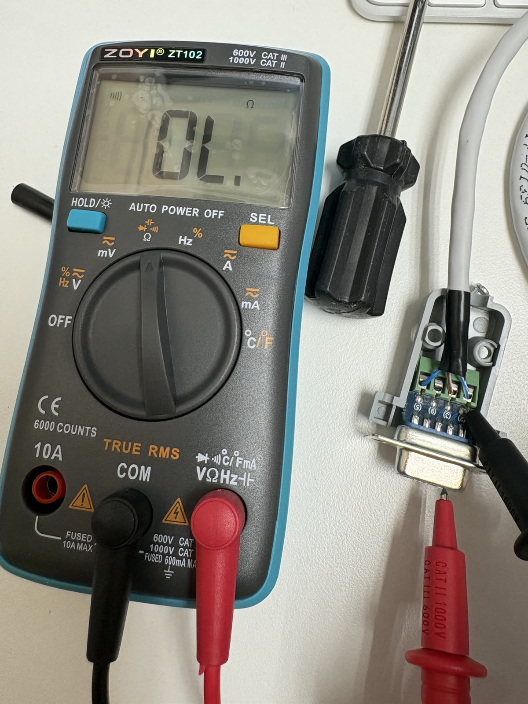
멀티미터 연속성 모드로 같은 번호의 접점 사이 도통과 서로 다른 단자 사이 쇼트를 점검했습니다. 서로 다른 단자 사이에서 OL을 확인했습니다.
완성한 케이블을 ATEN UC232AF에 연결하고 MacBook USB에 꽂았습니다. macOS에서 USB–RS232 직렬 장치가 인식됐습니다.
8/10 결과 · 케이블 조립, 도통·쇼트 점검, USB–RS232 인식 완료. MX850 패킷 수신 시험은 미실시.
2026.08.13 · MX850 수술실 연결 시험
케이블 통신 성공, 숫자 수신 실패
제작한 케이블을 MX850의 MIB/RS232 포트에 연결했습니다. USB–RS232 어댑터는 USB 멀티포트를 거쳐 Mac에 연결했습니다.

의공팀과 Data Export의 Fix 115200, MIB/RS232 1의 DtOut1을 확인했습니다. Mac은 115200baud·8N1·흐름 제어 없음으로 통신했습니다.
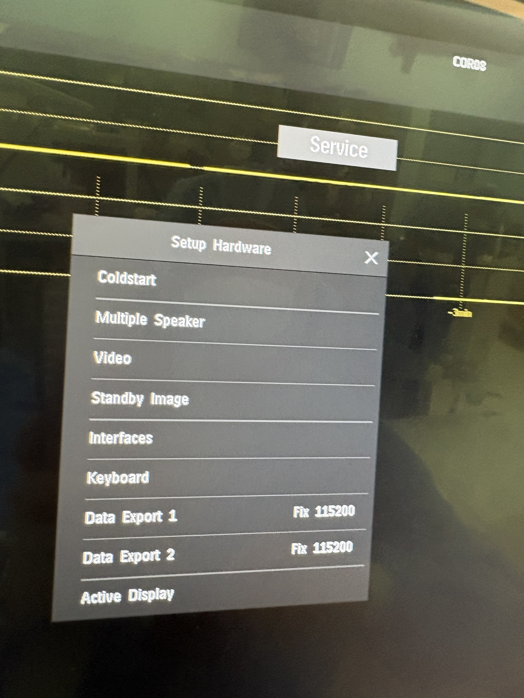
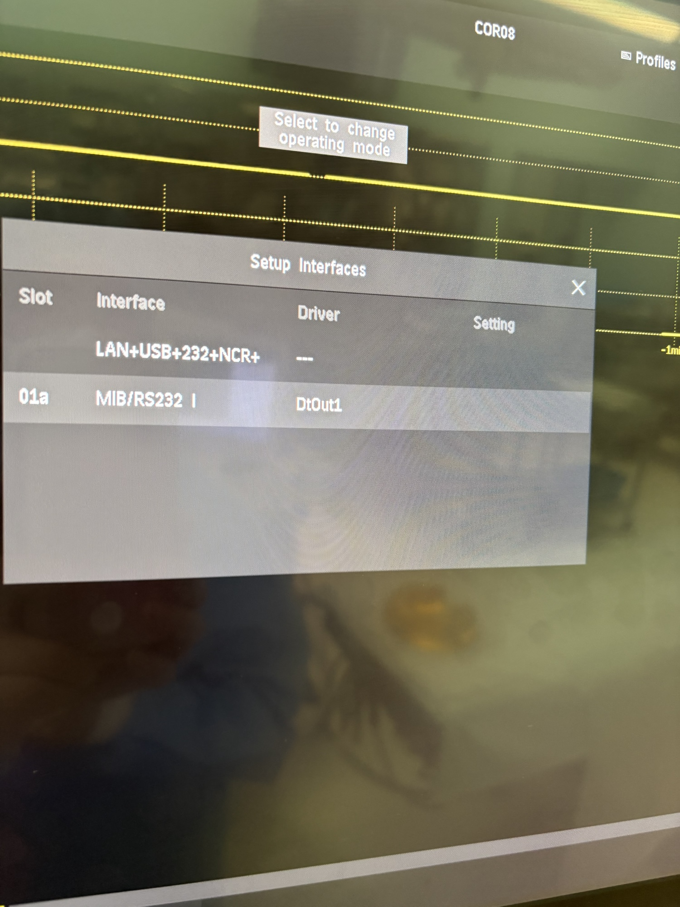
케이블을 통한 요청·응답은 오갔지만, 숫자 요청은 장비에서 거절됐습니다. 요청 패킷에서 조회 범위를 지정하는 항목(scope)이 4바이트여야 하는데 2바이트로 작성되어 있어 이를 수정했습니다.
| 항목 | 수정 전 | 수정 후 |
|---|---|---|
| 요청 형식 | scope 2바이트 | scope 4바이트 |
| 주된 오류 응답 | 처리 실패 code 10 | 잘못된 요청 인자 code 15 |
| 숫자 수신 | 0건 | 0건 |
수정 후에는 장비의 오류 응답이 달라졌지만 숫자 수신에는 이르지 못했습니다. 이후 재연결도 응답이 없어 종료했습니다.
케이블의 양방향 통신은 확인했고, 숫자 요청 조건은 다음 장비 시험에서 이어서 수정했습니다.
2026.09.18 · MX750 DEMO 모드
MX750 응답 수신과 숫자 해석
시험 장비는 MX750이었고, 연결 위치는 후면 connector-board의 RS232 포트였습니다. 이 포트에 맞춰 기존 케이블의 DB9 2번과 3번 배선을 바꿨습니다.
통신 주소도 확인했습니다. Network Status에는 DHCP가 선택되어 있었고 IP·subnet·gateway는 모두 0.0.0.0이었습니다. 최종 연결은 IP 주소를 사용하지 않는 RS232 직렬 통신으로 진행했습니다.
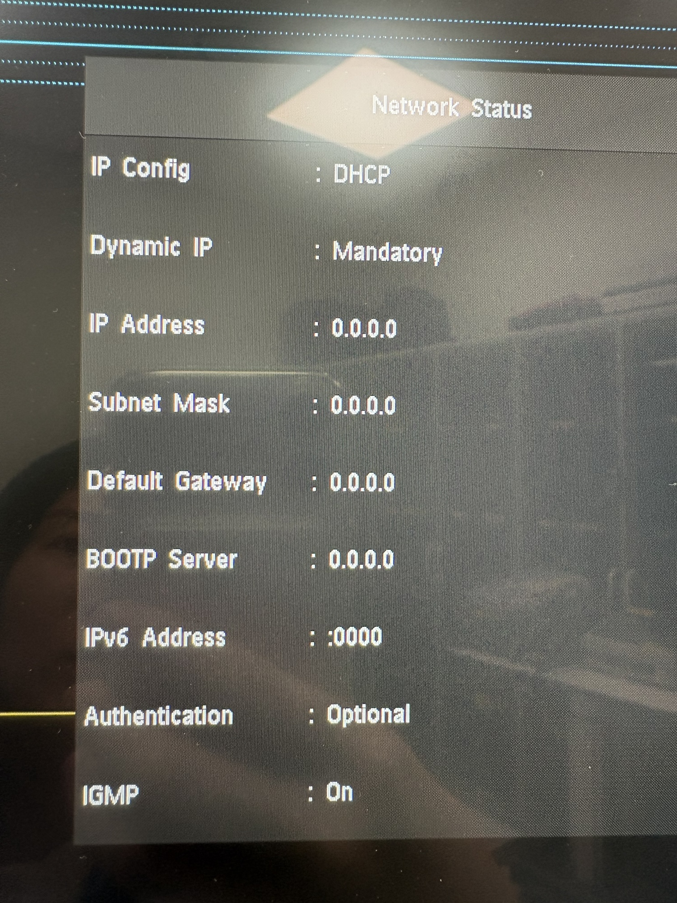
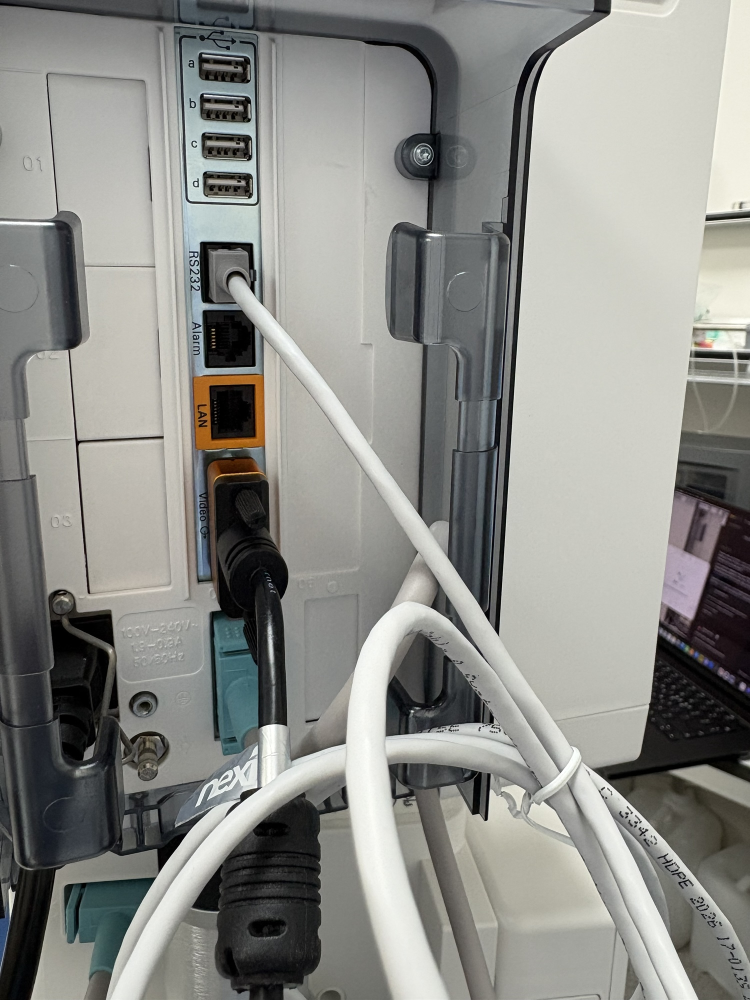
MX850에서 사용한 선택형 MIB 포트와 MX750의 connector-board 포트는 송신·수신 배선이 달랐습니다. DB9의 2번을 흰색/갈색, 3번을 흰색/파랑으로 바꾸고 5번 접지는 유지했습니다.
초기 시험에서는 응답을 받지 못했습니다. Mac에서 통신 속도를 설정한 뒤 포트가 닫히면서 USB–RS232 어댑터가 9600 baud로 돌아가고 있었습니다. 송신과 수신의 속도가 다르면 비트를 읽는 간격이 어긋나, 정상적인 요청과 응답을 해석할 수 없습니다.
포트를 먼저 열고 유지한 상태에서 장비와 같은 115200 baud를 적용하자 응답을 받았습니다. 이어 숫자 요청 패킷의 길이와 1초 주기 조회 설정, 숫자 해석을 수정했습니다.
| 수신 | 10,108바이트 · 17프레임 |
|---|---|
| Numeric Poll | 15건 · 응답당 27개 관측값 |
| 해석한 수치 | HR 60 · SpO₂ 95 · RR 15 |
| CRC / 파서 오류 | 0 / 0 |
저장한 DEMO 응답을 1초 주기로 재생해 Mac 화면의 숫자 표시를 확인했습니다.
2026.09.21 · 의공팀 사전 시험
MX800 영상과 수치 수신
의공팀에서 MX800과 Mac을 연결했습니다. 모니터 영상은 캡처카드로 받고, 숫자 데이터는 MIB/RS232와 USB–RS232 어댑터를 통해 받았습니다.

| 경로 | 입력 | 표시 결과 |
|---|---|---|
| 영상 | 모니터 영상 출력 → Elgato → Mac | 모니터의 숫자·파형 화면 전체 |
| 수치 | MIB/RS232 → USB–RS232 → Mac | 숫자를 해석해 Mac·XR에 별도 표시 |
405초 시점에 Poll Result 843건·187,544바이트를 수신했고 CRC·파서 오류는 0건이었습니다. 연결 종료(Abort) 6회가 발생했고 6회 모두 자동 재접속했습니다.
영상 방향은 Photo Booth와 직접 캡처로 비교했습니다. Photo Booth에서는 반전됐지만 AVFoundation 1920×1080 UYVY 캡처와 Mac 앱에서는 정상 방향이었습니다.
Mac에서 수신한 숫자를 XR 에뮬레이터로 전달했습니다. HR·SpO₂·RR과 최근 60초의 수치 추세를 표시했습니다. 이때 추세의 입력은 약 1Hz 숫자 데이터였습니다.
2026.09.30 · 생성 신호 / 에뮬레이터
ECG·호흡 파형 추가와 깜박임 수정
1초마다 받던 숫자에 더해 ECG 500Hz·Pleth 125Hz·Resp 62.5Hz의 파형 샘플을 처리하도록 확장했습니다. 생성 신호로 시험하던 중, 숫자는 남아 있는데 세 파형이 동시에 사라졌다 돌아오는 깜박임이 생겼습니다.
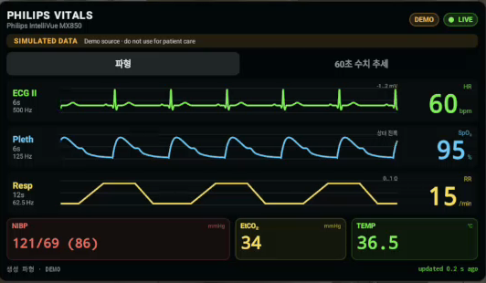
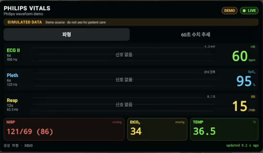
9월 30일 에뮬레이터 녹화의 연속된 두 프레임 · 생성 신호
직전 화면 갱신 시각에서 새 데이터의 수신 시각을 빼면서, 시간 차이가 잠깐 음수가 됐습니다. 이를 ‘신호 없음’으로 잘못 처리한 것이 원인이었습니다. 음수 시간 차이는 0으로 보정하고, 파형은 고정 위치에서 순환하며 갱신하도록 바꿨습니다.
| 조건 | 소실 프레임 / 분석 프레임 | 비율 |
|---|---|---|
| 수정 전 | 24 / 481 | 4.99% |
| 수정 후 | 0 / 698 | 0% |
2026.10.01 · 생성 DEMO / 에뮬레이터
영상 위에 간편 수치 표시
영상 위에 HR·SpO₂·RR을 표시하는 간편 오버레이를 추가했습니다. 생성 DEMO 신호로 숫자 표시와 위치·크기 조절을 시험했습니다.
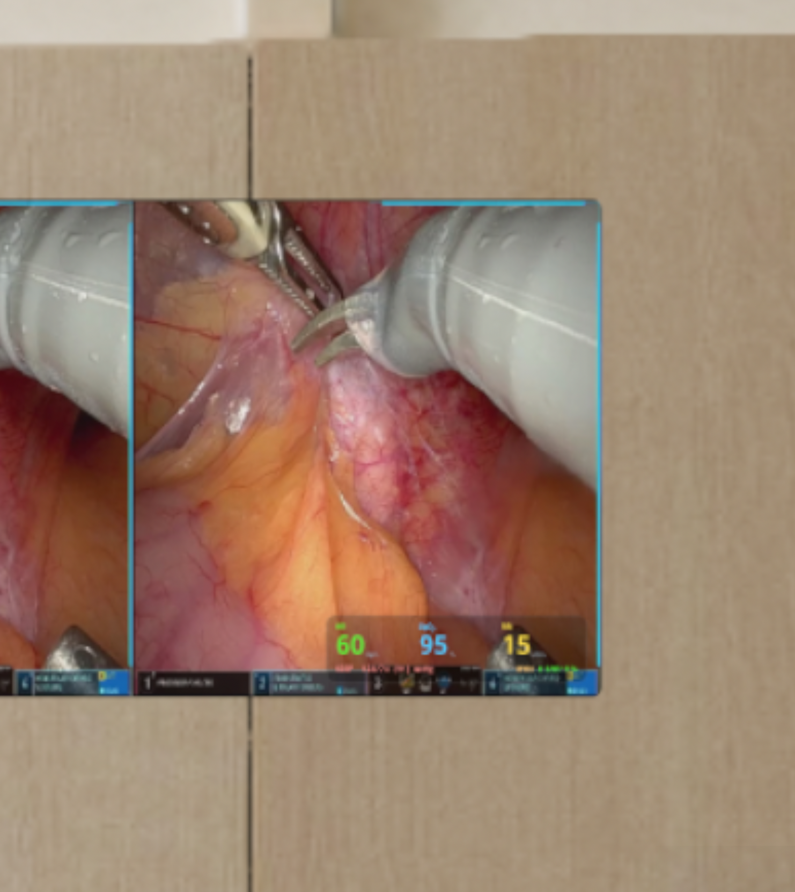
오버레이를 켜고 끄는 조작은 바이탈 패널에 두었습니다.
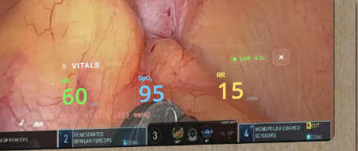
별도 바이탈 패널에는 ECG·Pleth·Resp 파형을 추가하고 생성 DEMO 입력으로 재생했습니다.
2026.10.07–08
알파 배포와 Mac Studio 설치
TestFlight 내부 알파용 빌드를 업로드했습니다. 10월 7일에는 0.2.0(7), 다음 날에는 0.2.1(9)의 Apple 업로드를 확인했습니다.
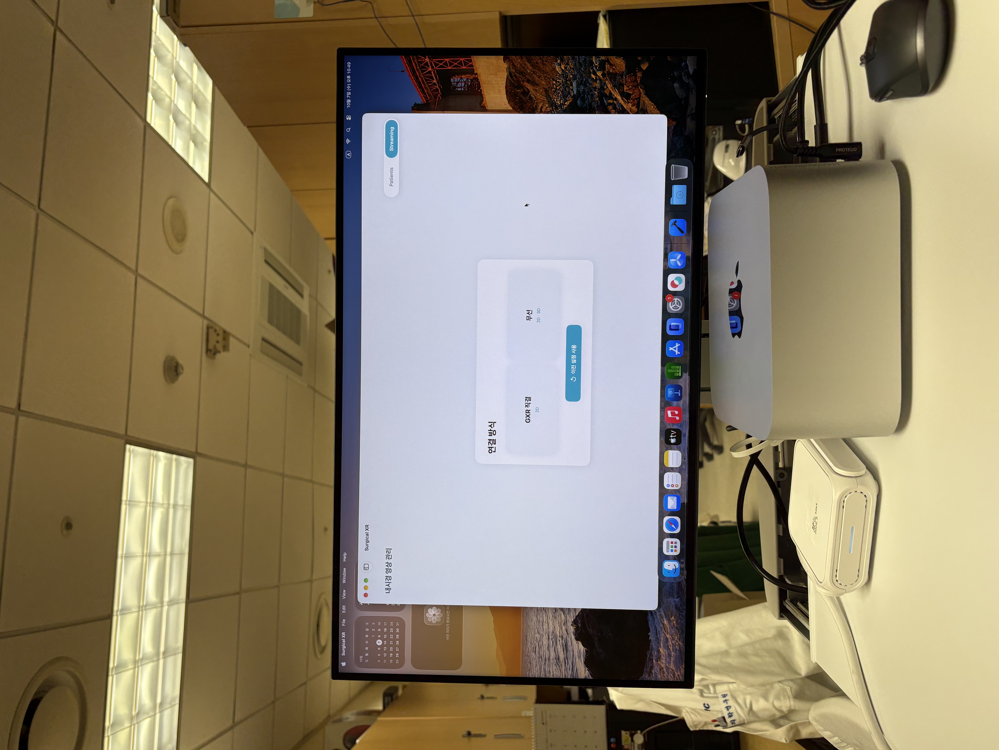
새 Mac Studio에 앱을 설치하고 연결 선택 화면을 열었습니다. 별도로 실행하던 바이탈 수신 기능을 Mac 앱에 통합하고, 기존 프로그램과 통신·데이터 해석 결과가 일치하는지 확인했습니다. 10월 8일에는 Galaxy XR의 바이탈 연결 대상을 Studio로 변경한 뒤, 수치 표시를 확인했습니다.
2026.10.14
수술방 시험용 테이블 준비
새 Mac Studio를 수술방에서 사용하기 위해 이동식 테이블에 모니터·키보드·마우스를 배치했습니다.
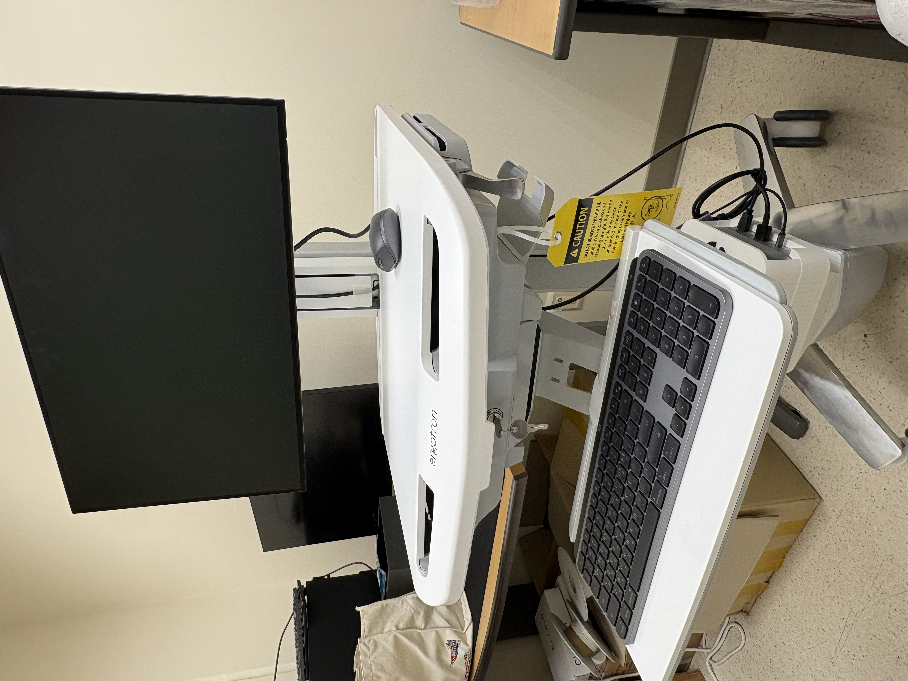
2026.10.15
수술방에서 영상·바이탈·CT 표시
수술방 시험에서 Galaxy XR에 내시경 영상, 바이탈 파형 패널과 CT 단면을 함께 표시했습니다. 영상 하단에는 간편 수치 오버레이를 표시했습니다.


2026.10.15–17 · 재생 비교·배포본 시험
몰려 오는 파형 데이터를 일정하게 재생
수술방 시험 뒤 파형이 멈췄다 움직이는 문제를 확인했습니다. 256ms 분량의 데이터가 네 패킷씩 몰려 도착했고, 다음 묶음까지는 최대 892ms의 공백이 있었습니다. 화면이 받은 데이터를 모두 그린 뒤 다음 패킷을 기다리는 것이 원인이었습니다.
1.024초 버퍼네 패킷 분량을 모아 재생할 시간을 확보
재생 버퍼를 256ms에서 1.024초로 늘려 네 패킷 분량을 담았습니다. Mac과 XR 모두 샘플 시각에 맞춰 화면을 진행시키고, 새 패킷이 없는 순간에도 버퍼의 데이터를 이어서 그리도록 수정했습니다.
| 조건 | 재생 시각이 멈춘 횟수 / 검사 횟수 |
|---|---|
| 수정 전 | 317 / 925 |
| 수정 후 | 0 / 925 |
파형을 모으는 만큼 표시 시점은 약 1초 늦어집니다. 위 비교는 기록된 패킷 도착 간격으로 재생 동작을 검사한 결과입니다.
2026.10.15 · 원인 분석·수정
ECG가 끊기고 흰 막대가 생기던 원인
10월 15일, Galaxy XR의 ECG 위에 흰 막대가 빽빽하게 나타났습니다. Mac에서는 ECG 선이 점선처럼 끊겨 보였습니다.

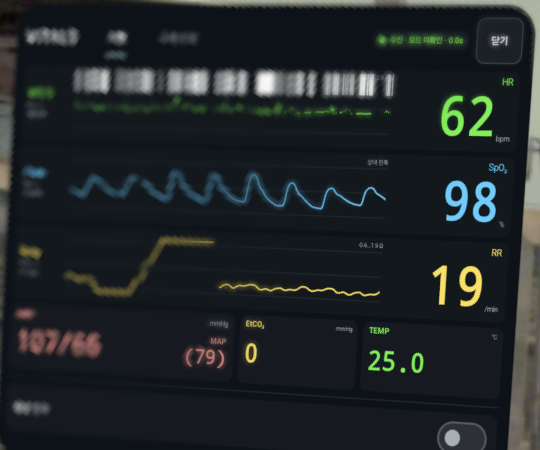
수신 데이터를 분석해 보니 샘플의 높낮이를 나타내는 비트 일부를 ‘유효하지 않은 값’이나 심박조율기 표시 신호로 잘못 읽고 있었습니다.
정상 샘플도 결측·특수 신호로 오인
흰 막대 표시
정상 샘플과 상태 정보를 구분
실제 상태만 표시
상태에 해당하는 비트가 모두 일치하는지 확인하도록 판정을 고쳤습니다. 정상 샘플은 파형으로 그리고, 실제 결측이나 특수 신호는 그대로 표시하도록 했습니다.

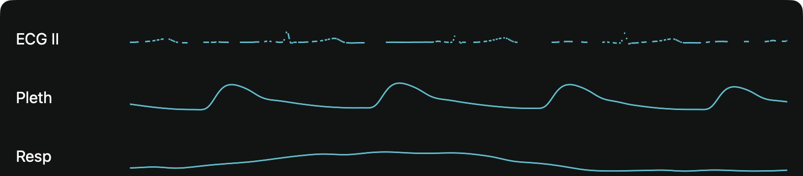

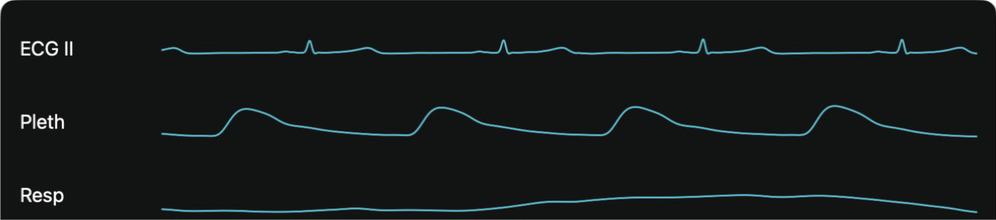
| 항목 | 수정 전 | 수정 후 |
|---|---|---|
| ECG 샘플 | 15,360 | 14,976 |
| 빈값 | 7,791 | 0 |
| 흰 막대 표시 신호 | 7,502 | 0 |
| 공백 패킷 | 0 | 0 |

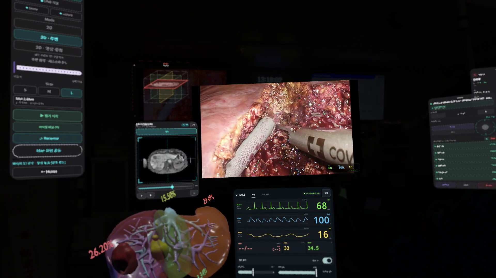